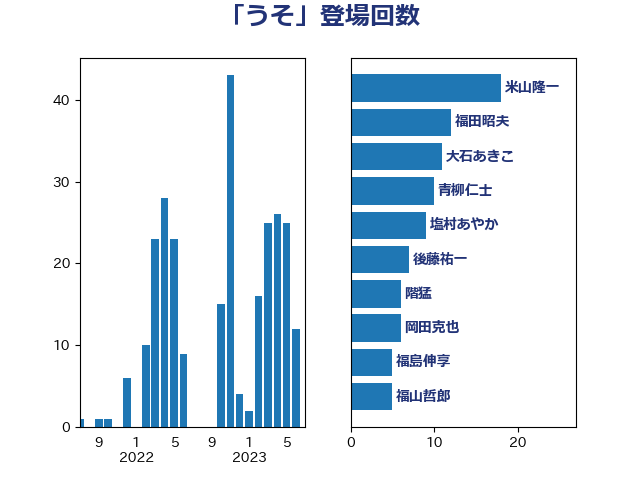

単語「うそ」

| 大西健介 | 立憲民主党 | 21 回 |
| 福山哲郎 | 立憲民主党 | 18 回 |
| 上田清司 | 国民民主党 | 14 回 |
| 後藤祐一 | 立憲民主党 | 12 回 |
| 田村智子 | 日本共産党 | 11 回 |
| 足立康史 | 日本維新の会 | 10 回 |
| 青柳仁士 | 日本維新の会 | 9 回 |
| 米山隆一 | 立憲民主党 | 8 回 |
| 杉尾秀哉 | 立憲民主党 | 7 回 |
| 岡田克也 | 立憲民主党 | 6 回 |
| 森山浩行 | 立憲民主党 | 6 回 |
| 蓮舫 | 立憲民主党 | 6 回 |
| 階猛 | 立憲民主党 | 6 回 |
| 柚木道義 | 立憲民主党 | 5 回 |
| 泉健太 | 立憲民主党 | 4 回 |
| 石橋通宏 | 立憲民主党 | 4 回 |
| 福島みずほ | 社会民主党 | 4 回 |
| 辻元清美 | 立憲民主党 | 4 回 |
| 伴野豊 | 立憲民主党 | 3 回 |
| 勝部賢志 | 立憲民主党 | 3 回 |
| 古賀之士 | 立憲民主党 | 3 回 |
| 塩川鉄也 | 日本共産党 | 3 回 |
| 大石あきこ | れいわ新選組 | 3 回 |
| 奥野総一郎 | 立憲民主党 | 3 回 |
| 小池晃 | 日本共産党 | 3 回 |
| 小泉進次郎 | 自由民主党 | 3 回 |
| 小熊慎司 | 立憲民主党 | 3 回 |
| 小西洋之 | 立憲民主党 | 3 回 |
| 山井和則 | 立憲民主党 | 3 回 |
| 山添拓 | 日本共産党 | 3 回 |
| 志位和夫 | 日本共産党 | 3 回 |
| 末松義規 | 立憲民主党 | 3 回 |
| 枝野幸男 | 立憲民主党 | 3 回 |
| 江田憲司 | 立憲民主党 | 3 回 |
| 浜田聡 | NHK党 | 3 回 |
| 浦野靖人 | 日本維新の会 | 3 回 |
| 田村憲久 | 自由民主党 | 3 回 |
| 穀田恵二 | 日本共産党 | 3 回 |
| 菊田真紀子 | 立憲民主党 | 3 回 |
| 中谷一馬 | 立憲民主党 | 2 回 |
| 伊藤岳 | 日本共産党 | 2 回 |
| 前原誠司 | 国民民主党 | 2 回 |
| 古川禎久 | 自由民主党 | 2 回 |
| 吉川元 | 立憲民主党 | 2 回 |
| 小沼巧 | 立憲民主党 | 2 回 |
| 山下芳生 | 日本共産党 | 2 回 |
| 山田宏 | 自由民主党 | 2 回 |
| 打越さく良 | 立憲民主党 | 2 回 |
| 有村治子 | 自由民主党 | 2 回 |
| 本村伸子 | 日本共産党 | 2 回 |
| 松本尚 | 自由民主党 | 2 回 |
| 森本真治 | 立憲民主党 | 2 回 |
| 櫛渕万里 | れいわ新選組 | 2 回 |
| 海江田万里 | 立憲民主党 | 2 回 |
| 田村貴昭 | 日本共産党 | 2 回 |
| 福島伸享 | 無所属 | 2 回 |
| 笠浩史 | 無所属 | 2 回 |
| 藤田文武 | 日本維新の会 | 2 回 |
| 逢坂誠二 | 立憲民主党 | 2 回 |
| 道下大樹 | 立憲民主党 | 2 回 |
| 鈴木宗男 | 日本維新の会 | 2 回 |
| 麻生太郎 | 自由民主党 | 2 回 |
| 下条みつ | 立憲民主党 | 1 回 |
| 中谷真一 | 自由民主党 | 1 回 |
| 伊藤孝恵 | 国民民主党 | 1 回 |
| 前川清成 | 日本維新の会 | 1 回 |
| 吉田宣弘 | 公明党 | 1 回 |
| 吉田忠智 | 立憲民主党 | 1 回 |
| 吉田統彦 | 立憲民主党 | 1 回 |
| 嘉田由紀子 | 無所属 | 1 回 |
| 大塚耕平 | 国民民主党 | 1 回 |
| 安江伸夫 | 公明党 | 1 回 |
| 宮本岳志 | 日本共産党 | 1 回 |
| 宮本徹 | 日本共産党 | 1 回 |
| 寺田学 | 立憲民主党 | 1 回 |
| 岡本あき子 | 立憲民主党 | 1 回 |
| 岡本三成 | 公明党 | 1 回 |
| 岸真紀子 | 立憲民主党 | 1 回 |
| 川田龍平 | 立憲民主党 | 1 回 |
| 村井英樹 | 自由民主党 | 1 回 |
| 松沢成文 | 日本維新の会 | 1 回 |
| 梅村みずほ | 日本維新の会 | 1 回 |
| 梅村聡 | 日本維新の会 | 1 回 |
| 櫻井充 | 自由民主党 | 1 回 |
| 櫻井周 | 立憲民主党 | 1 回 |
| 武田良太 | 自由民主党 | 1 回 |
| 水岡俊一 | 立憲民主党 | 1 回 |
| 片山大介 | 日本維新の会 | 1 回 |
| 牧山ひろえ | 立憲民主党 | 1 回 |
| 玉木雄一郎 | 国民民主党 | 1 回 |
| 田名部匡代 | 立憲民主党 | 1 回 |
| 田村まみ | 国民民主党 | 1 回 |
| 白石洋一 | 立憲民主党 | 1 回 |
| 福田昭夫 | 立憲民主党 | 1 回 |
| 笠井亮 | 日本共産党 | 1 回 |
| 芳賀道也 | 国民民主党 | 1 回 |
| 菅義偉 | 自由民主党 | 1 回 |
| 萩生田光一 | 自由民主党 | 1 回 |
| 落合貴之 | 立憲民主党 | 1 回 |
| 西田昌司 | 自由民主党 | 1 回 |
| 谷田川元 | 立憲民主党 | 1 回 |
| 赤羽一嘉 | 公明党 | 1 回 |
| 足立敏之 | 自由民主党 | 1 回 |
| 近藤和也 | 立憲民主党 | 1 回 |
| 遠藤敬 | 日本維新の会 | 1 回 |
| 金子恵美 | 立憲民主党 | 1 回 |
| 鎌田さゆり | 立憲民主党 | 1 回 |
| 長妻昭 | 立憲民主党 | 1 回 |
| 青柳陽一郎 | 立憲民主党 | 1 回 |
| 須藤元気 | 無所属 | 1 回 |
| 高橋英明 | 日本維新の会 | 1 回 |